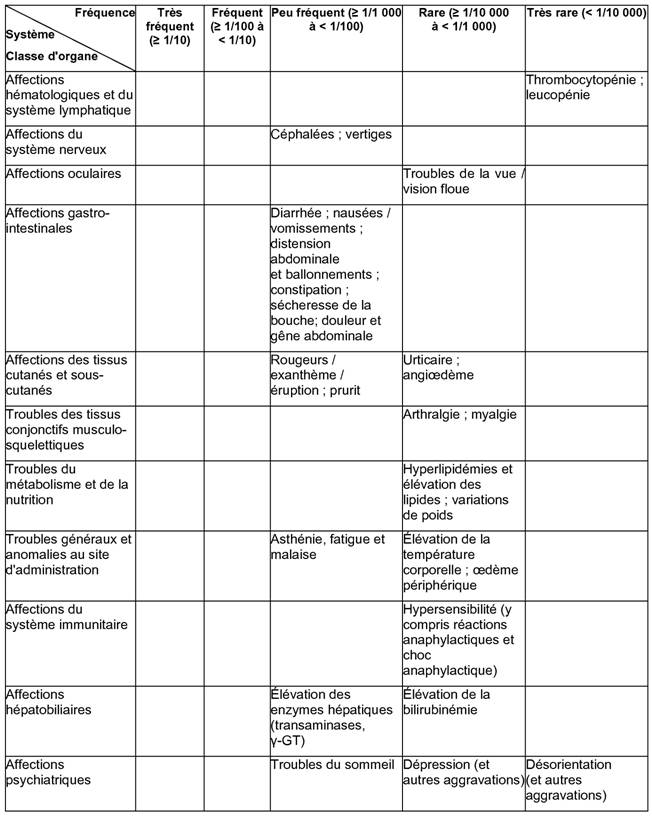

RÉSUMÉ DES CARACTÉRISTIQUES DU PRODUIT
ANSM - Mis à jour le : 24/12/2009
PANTIPP 40 mg, poudre pour solution injectable (IV)
2. COMPOSITION QUALITATIVE ET QUANTITATIVE
Pantoprazole ..................................................................................................................................... 40 mg
Equivalent à 45,10 mg de pantoprazole sodique sesquihydraté
Pour un flacon de poudre pour solution injectable.
Excipient: Sodium.
Pour la liste complète des excipients, voir rubrique 6.1.
Poudre pour solution injectable.
Poudre blanche à presque blanche.
4.1. Indications thérapeutiques
· Œsophagite par reflux gastro-œsophagien modérée et sévère
· Ulcère duodénal
· Ulcère gastrique
· Syndrome de Zollinger-Ellison et autres conditions pathologiques hypersécrétoires
4.2. Posologie et mode d'administration
L'administration par voie intraveineuse de PANTIPP 40 mg, poudre pour solution injectable est recommandée uniquement lorsque la voie orale est impossible.
Posologie recommandée
Ulcère duodénal, ulcère gastrique, œsophagite par reflux modérée et sévère
La dose intraveineuse recommandée est d'un flacon (40 mg de pantoprazole) de PANTIPP 40 mg, poudre pour solution injectable par jour.
Syndrome de Zollinger-Ellison et autres conditions pathologiques hypersécrétoires
Pour le traitement du syndrome de Zollinger-Ellison et des autres conditions pathologiques hypersécrétoires, la posologie initiale est 80 mg de PANTIPP 40 mg, poudre pour solution injectable par jour. Celle-ci peut être augmentée ou diminuée en fonction des besoins, selon les résultats des mesures du débit acide. Dans le cas d'une posologie supérieure à 80 mg par jour, la dose sera fractionnée en deux administrations. Une augmentation temporaire de la posologie au-dessus de 160 mg de pantoprazole est possible, mais ne devrait pas excéder la durée nécessaire à la maîtrise de la sécrétion acide.
Lorsqu'une maîtrise rapide de l'acidité est requise, une dose initiale de 2 x 80 mg de PANTIPP 40 mg, poudre pour solution injectable est suffisante pour ramener la production d'acide dans la plage visée (< 10 mEq/h) en une heure chez la plupart des patients. Le passage de PANTIPP 40 mg, poudre pour solution injectable à la formulation orale de PANTIPP 40 mg, poudre pour solution injectable doit avoir lieu dès qu'il est cliniquement justifié.
Instructions générales
Dissoudre la poudre en injectant dans le flacon de lyophilisat 10 ml de chlorure de sodium à 9 mg/ml (0,9%). Pour les instructions de préparation, voir rubrique 6.6.
La solution obtenue peut être administrée telle quelle ou bien diluée dans 100 ml de sérum physiologique à 9 mg/ml (0,9%) ou de sérum glucosé à 55 mg/ml (5%).
Après préparation, la solution doit être utilisée dans les 12 heures.
L'administration sera réalisée sur 2 à 15 minutes.
Dès que le traitement oral est possible, le traitement par PANTIPP 40 mg, poudre pour solution injectable doit être interrompu et remplacé par 40 mg de pantoprazole administré par voie orale. Des données sont disponibles pour l'utilisation intraveineuse sur une durée allant jusqu'à 7 jours. Pour la durée totale de traitement pour les différentes indications, se reporter au RCP des comprimés gastro-résistants à 40 mg.
Patients pédiatriques
L'expérience chez l'enfant est limitée. Par conséquent, l'utilisation de PANTIPP, poudre pour solution injectable est déconseillée chez les patients âgés de moins de 18 ans jusqu'à ce que des données supplémentaires soient disponibles.
Populations particulières
Chez l'insuffisant hépatique, la dose doit être réduite à 1 flacon de pantoprazole i.v. 40 mg tous les deux jours. Un bilan des enzymes hépatiques devra être réalisé régulièrement pendant le traitement. En cas d'élévation de celles-ci, le traitement devra être interrompu. Voir également rubrique 4.3 et rubrique 4.4.
Ne pas dépasser une dose journalière de 40 mg de pantoprazole chez les sujets âgés ou chez l'insuffisant rénal. Voir également rubrique 4.3 et rubrique 4.4.
Hypersensibilité connue au pantoprazole et/ou à l'un des autres composants de PANTIPP 40 mg, poudre pour solution injectable.
Le pantoprazole, comme les autres IPP, ne doit pas être administré avec l'atazanavir (voir rubrique 4.5).
4.4. Mises en garde spéciales et précautions d'emploi
L'administration par voie intraveineuse de PANTIPP 40 mg, poudre pour solution injectable est recommandée uniquement si l'application orale est impossible.
En présence de tout symptôme alarmant (par exemple perte de poids involontaire significative, vomissements récurrents, dysphagie, hématémèse, anémie ou méléna) et, lorsqu'un ulcère gastrique est suspecté ou présent, une affection maligne doit être écartée car la prise de pantoprazole peut masquer les symptômes et par conséquent en retarder le diagnostic.
D'autres examens doivent être envisagés si les symptômes persistent malgré un traitement adéquat.
La dose journalière de 40 mg de pantoprazole ne doit pas être dépassée chez les sujets âgés ou chez l'insuffisant rénal.
Chez l'insuffisant hépatique, la dose journalière doit être réduite à 20 mg de pantoprazole. Un bilan des enzymes hépatiques devra être réalisé régulièrement pendant le traitement. En cas d'élévation de celles-ci, le traitement devra être interrompu.
Comme tous les inhibiteurs de la pompe à protons, le pantoprazole est susceptible d'augmenter le nombre des bactéries normalement présentes dans le tractus gastro-intestinal supérieur. Le traitement avec PANTIPP 40 mg, poudre pour solution injectable peut conduire à une légère augmentation du risque d'infections gastro-intestinales provoquées par des bactéries (par exemple Salmonella, Campylobacter et C. difficile).
Ce médicament contient du sodium. Le taux de sodium est inférieur à 1 mmol (23 mg) par dose, c'est-à-dire "sans sodium".
4.5. Interactions avec d'autres médicaments et autres formes d'interactions
PANTIPP 40 mg, poudre pour solution injectable peut modifier l'absorption des médicaments dont la biodisponibilité est pH-dépendante (par exemple le kétoconazole).
L'administration concomitante d'atazanavir 300 mg/ritonavir 100 mg et d'oméprazole (40 mg une fois par jour) ou d'atazanavir 400 mg et de lansoprazole (dose unique de 60 mg) chez des volontaires sains a entraîné une réduction substantielle de la biodisponibilité de l'atazanavir. L'absorption de l'atazanavir est pH-dépendante, par conséquent le pantoprazole ne doit pas être administré avec l'atazanavir (voir rubrique 4.3).
Le pantoprazole est métabolisé au niveau du foie, par le système enzymatique du cytochrome P450. Une interaction avec une autre substance métabolisée par ce même système enzymatique ne peut être exclue. Cependant, aucune interaction cliniquement significative n'a été observée au cours d'études spécifiques portant notamment sur la carbamazépine, la caféine, le diazépam, le diclofénac, la digoxine, l'éthanol, le glibenclamide, le métoprolol, le naproxène, la nifédipine, la phénytoïne, le piroxicam, la théophylline et un contraceptif oral.
Bien qu'aucune interaction n'ait été observée lors de l'administration concomitante de phenprocoumone ou de warfarine, au cours des études de pharmacocinétique clinique, quelques cas isolés de modification de l'INR ont été rapportés, lors de l'administration simultanée, après la mise sur le marché. En conséquence, chez les patients traités par des anticoagulants coumariniques, le suivi du taux de l'INR/taux de prothrombine est recommandé au début et à l'arrêt du traitement, ou en cas d'administration intermittente de pantoprazole.
Il n'existe pas d'interactions avec les antiacides administrés de manière concomitante.
Il n'existe pas de données suffisantes concernant l'utilisation du pantoprazole chez la femme enceinte. Au cours des études de reproduction chez l'animal, des signes de fœtotoxicité ont été observés (voir rubrique 5.3). Le risque potentiel chez l'homme n'est pas connu. PANTIPP 40 mg, poudre pour solution injectable ne doit pas être utilisé au cours de la grossesse qu'en cas de réelle nécessité.
Il n'existe aucune donnée sur le passage du pantoprazole dans le lait humain. Des études menées chez l'animal ont montré que le pantoprazole passait dans le lait maternel. La décision de poursuivre/arrêter l'allaitement ou celle de poursuivre/arrêter le traitement par PANTIPP 40 mg, poudre pour solution injectable doit être prise en tenant compte du bénéfice de l'allaitement pour l'enfant et du bénéfice du traitement par PANTIPP 40 mg, poudre pour solution injectable pour la mère.
4.7. Effets sur l'aptitude à conduire des véhicules et à utiliser des machines
PANTIPP 40 mg, poudre pour solution injectable n'a pas d'effet connu sur l'aptitude à conduire des véhicules et à utiliser des machines. Des effets indésirables tels que sensations vertigineuses et /ou troubles visuels peuvent survenir (voir rubrique 4.8). Dans ces conditions, la capacité de réaction peut être diminuée.
Les effets indésirables suivants ont été rapportés au cours des études cliniques avec le pantoprazole.
Dans chaque groupe de fréquence, les effets indésirables sont présentés par ordre de gravité décroissant.

Les autres effets indésirables suivants ont été notifiés après commercialisation:
Affections hépatobiliaires: lésion hépatocellulaire, ictère, insuffisance hépatocellulaire.
Affections psychiatriques: hallucinations, confusion (notamment chez les patients prédisposés, ainsi que l'aggravation de ces symptômes lorsqu'ils sont préexistants).
Affections du rein et des voies urinaires: néphrite interstitielle.
Affections de la peau et du tissu sous-cutané: syndrome de Stevens-Johnson, syndrome de Lyell; érythème polymorphe, photosensibilité.
Aucun symptôme de surdosage n'est connu chez l'homme.
Des doses allant jusqu'à 240 mg par voie intraveineuse ont été administrées pendant 2 minutes et ont été bien tolérées. Le pantoprazole est fortement lié aux protéines et n'est donc pas facilement dialysable.
En cas de surdosage avec des signes cliniques d'intoxication, les règles usuelles de traitement symptomatique et de soutien s'appliquent.
5. PROPRIETES PHARMACOLOGIQUES
5.1. Propriétés pharmacodynamiques
Classe pharmacothérapeutique: INHIBITEURS DE LA POMPE A PROTONS, code ATC: A02BC02.
Le pantoprazole est un benzimidazole substitué qui inhibe la sécrétion d'acide chlorhydrique de l'estomac par un blocage spécifique des pompes à protons des cellules pariétales.
Le pantoprazole est converti en sa forme active dans les canalicules acides de la cellule pariétale, où il inhibe l'enzyme H+/K+-ATPase, c'est-à-dire la phase finale de la sécrétion d'acide gastrique. Cette inhibition est dose-dépendante et concerne à la fois la sécrétion acide basale et stimulée. Chez la plupart des patients, la disparition des symptômes est obtenue en 2 semaines. Comme avec les autres inhibiteurs de la pompe à protons et des récepteurs H2, la prise de pantoprazole entraîne une diminution de l'acidité gastrique et augmente proportionnellement la gastrinémie. Cette élévation est réversible. Le pantoprazole se liant avec l'enzyme responsable de la phase terminale, il diminue la sécrétion acide indépendamment de l'origine du stimulus (acétylcholine, histamine, gastrine). L'activité est identique que la voie d'administration soit orale ou intraveineuse.
5.2. Propriétés pharmacocinétiques
Pharmacocinétique générale
Le volume de distribution est d'environ 0,15 l/kg et la clairance de 0,1 l/h/kg. La demi-vie d'élimination est d'environ 1 h. Il a été noté quelques cas isolés de sujets chez lesquels l'élimination est retardée. Le pantoprazole se fixant spécifiquement aux pompes à protons des cellules pariétales gastriques, sa demi-vie d'élimination ne rend pas compte de sa durée d'action plus prolongée (inhibition de la sécrétion acide).
La pharmacocinétique ne varie pas après doses uniques ou répétées. Pour des doses allant de 10 à 80 mg, la cinétique plasmatique du pantoprazole est linéaire après administration orale et intraveineuse.
La liaison aux protéines plasmatiques est de 98% environ. Le pantoprazole est presque exclusivement métabolisé par le foie. L'élimination rénale est la voie principale d'excrétion des métabolites (environ 80%), le reste étant éliminé dans les fèces. Le principal métabolite retrouvé à la fois dans le sérum et les urines est le déméthylpantoprazole, sous la forme d'un sulfoconjugué. Sa demi-vie d'élimination (environ 1,5 h) n'est pas supérieure à celle du pantoprazole.
Caractéristiques chez les patients/populations particulières
Aucune diminution de la dose n'est nécessaire chez les insuffisants rénaux (par exemple les patients dialysés). Comme chez le sujet sain, la demi-vie d'élimination est courte. Seules de très faibles quantités de pantoprazole sont dialysées. Bien que le principal métabolite ait une demi-vie légèrement allongée (2-3 h), l'excrétion reste rapide et aucune accumulation n'est donc observée.
Chez le cirrhotique (classes A et B de Child), malgré l'allongement de la demi-vie jusqu'à 7 à 9 h et l'augmentation de l'ASC d'un facteur 5 à 7, la concentration sérique maximale n'est que légèrement augmentée (x 1,5) comparativement au sujet sain.
La légère augmentation de l'ASC et de la Cmax observée chez le sujet âgé comparativement au sujet jeune n'a aucune incidence clinique.
Enfants
Après administration IV unique d'une dose de 0,8 ou 1,6 mg/kg de pantoprazole à des enfants âgés de 2 à 16 ans, il n'a pas été observé de corrélation significative entre la clairance et l'âge ou le poids. L'ASC et le volume de distribution étaient conformes aux données observées chez l'adulte.
5.3. Données de sécurité préclinique
Les données précliniques ne mettent en évidence aucun risque particulier chez l'homme, au vu des essais pharmacologiques de sécurité, de toxicité par administrations réitérées et de génotoxicité.
Au cours des études de carcinogénicité sur 2 ans chez le rat (correspondant à un traitement à vie) sont apparues des néoplasies neuro-endocriniennes. De plus, des papillomes des cellules squameuses sont apparus dans l'estomac antérieur du rat dans une étude. Le mécanisme entraînant la formation de carcinoïdes gastriques par les benzimidazoles substitués a été étudié de façon approfondie et l'on peut conclure qu'il s'agit d'une réaction secondaire à l'élévation massive de la gastrinémie chez le rat au cours des études à long terme portant sur de fortes doses.
Durant les études sur 2 ans chez le rongeur, une augmentation du nombre des tumeurs hépatiques a été observée chez le rat (au cours d'une seule étude) et les souris femelles, et a été considérée comme due à un métabolisme hépatique important.
Une légère augmentation des transformations néoplasiques de la thyroïde a été notée dans le groupe de rats recevant la plus forte dose (200 mg/kg) au cours d'une étude sur 2 ans. L'apparition de ces néoplasies est associée aux modifications induites par le pantoprazole dans la dégradation de la thyroxine au niveau hépatique chez le rat. La dose thérapeutique chez l'homme étant faible, aucun effet sur la glande thyroïde n'est attendu.
Au cours des études de reproduction chez l'animal, des signes discrets de fœtotoxicité ont été observés pour des doses supérieures à 5 mg/kg.
Le passage transplacentaire a été étudié chez le rat et s'avère aller en augmentant avec l'avancement de la gestation. En conséquence, la concentration du pantoprazole chez le fœtus est brièvement augmentée avant la naissance.
Edétate disodique, hydroxyde de sodium (pour ajustement du pH)
Ce médicament ne doit pas être reconstitué ni dilué avec d'autres solutés que ceux décrits dans la rubrique 6.6.
Après reconstitution, ou reconstitution puis dilution, la stabilité physico-chimique a été démontrée pendant 12 heures à 25°C.
Toutefois d'un point de vue microbiologique, le produit doit être utilisé immédiatement.
6.4. Précautions particulières de conservation
A conserver à une température ne dépassant pas 25°C.
A conserver dans l'emballage d'origine, à l'abri de la lumière.
Pour les conditions de stockage de la solution reconstituée et du médicament dilué, voir la rubrique 6.3.
6.5. Nature et contenu de l'emballage extérieur
Flacon (Verre transparent) de 10 ml (type I) muni d'une capsule (Aluminium) et d'un bouchon (Caoutchouc bromobutyle).
Boîte de 1, 5 (5x1), 10 (10x1) ou 20 (20x1) flacons.
Toutes les présentations peuvent ne pas être commercialisées.
6.6. Précautions particulières d’élimination et de manipulation
Préparer une solution prête à l'emploi en injectant 10 ml de chlorure de sodium à 9 mg/ml (0,9%) pour préparations injectables dans le flacon contenant la substance sèche. Après reconstitution, le produit se présente sous la forme d'une solution limpide jaunâtre. La solution obtenue peut être administrée telle quelle ou bien diluée dans 100 ml de chlorure de sodium à 9 mg/ml (0,9%) ou de solution de glucose à 55 mg/ml (5%). Pour la dilution, utiliser des récipients en verre ou en plastique.
Après reconstitution, ou reconstitution puis dilution, la stabilité a été démontrée pendant 12 heures à 25°C. De ce fait, une fois préparée, la solution doit être utilisée dans un délai de 12 heures.
D'un point de vue microbiologique, la solution doit être utilisée immédiatement.
PANTIPP 40 mg, poudre pour solution injectable (IV) ne doit pas être reconstitué ni dilué à l'aide d'autres solutés que ceux décrits.
Toute quantité résiduelle après administration, ainsi que toute solution dont l'apparence pourrait être modifiée (par exemple opalescence ou précipitation) doit être éliminée conformément à la réglementation en vigueur.
Le contenu du flacon est destiné à un usage unique par voie intraveineuse.
7. TITULAIRE DE L’AUTORISATION DE MISE SUR LE MARCHE
NYCOMED GMBH
BYK-GULDEN STR.2
78467 KONSTANZ
ALLEMAGNE
8. NUMERO(S) D’AUTORISATION DE MISE SUR LE MARCHE
· 576 112-3 ou 34009 576 112 3 1: Flacon (Verre transparent) de 10 ml (type I) muni d'une capsule (Aluminium) et d'un bouchon (Caoutchouc bromobutyle). Boîte de 1.
· 576 114-6 ou 34009 576 114 6 0: Flacon (Verre transparent) de 10 ml (type I) muni d'une capsule (Aluminium) et d'un bouchon (Caoutchouc bromobutyle). Boîte de 5 (5x1).
· 576 115-2 ou 34009 576 115 2 1: Flacon (Verre transparent) de 10 ml (type I) muni d'une capsule (Aluminium) et d'un bouchon (Caoutchouc bromobutyle). Boîte de 10 (10x1).
· 576 116-9 ou 34009 576 116 9 9: Flacon (Verre transparent) de 10 ml (type I) muni d'une capsule (Aluminium) et d'un bouchon (Caoutchouc bromobutyle). Boîte de 20 (20x1).
9. DATE DE PREMIERE AUTORISATION/DE RENOUVELLEMENT DE L’AUTORISATION
[à compléter par le titulaire]
10. DATE DE MISE A JOUR DU TEXTE
[à compléter par le titulaire]
Sans objet.
12. INSTRUCTIONS POUR LA PREPARATION DES RADIOPHARMACEUTIQUES
Sans objet.
Liste II.